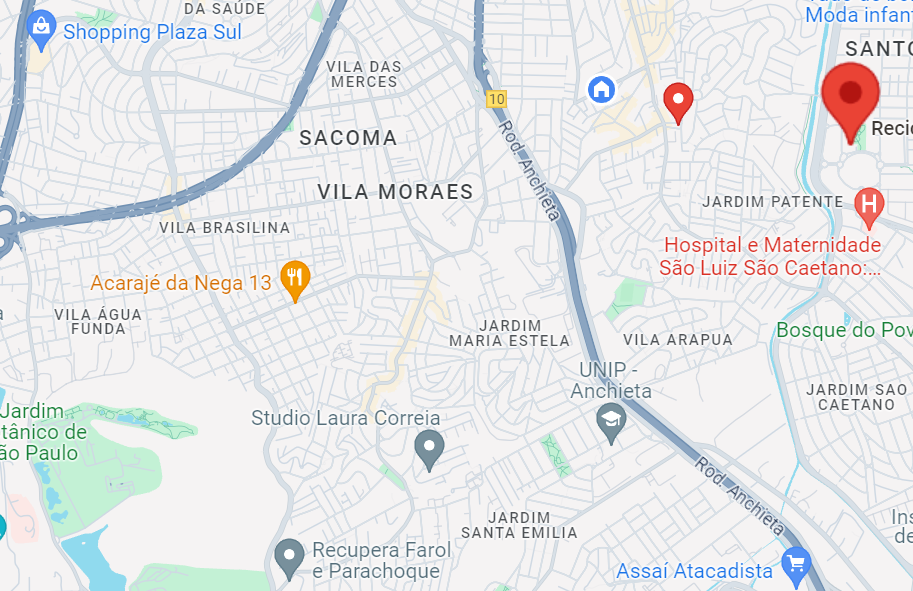

Mapa
Saiba onde tem locais de triagem e reciclagem perto de você

aqui estão os pontos de coleta de lixo reciclavel mais perto da região e seus
endereços
primeiro ponto de coleta fica no endereço:R. São João Clímaco, 66-104 - São João Climaco, São Paulo - SP,
04255-010v
segundo ponto de coleta fica no endereço:Alameda Terracota, 215 - Cj518 e 519 - Cerâmica, São Caetano do Sul
-
SP, 09531-190